2 Multithreading com Pthreads
Resumo: Este capítulo introduz os conceitos fundamentais da computação paralela e da programação com threads utilizando a biblioteca Pthreads, padrão POSIX. Serão apresentados os princípios de execução concorrente, criação e gerenciamento de threads, sincronização com mutexes, e boas práticas para evitar condições de corrida e deadlocks.
2.1 Introdução
Thread: parte de um programa. Processo Leve. Tarefa.
Cada processo pode possuir uma ou múltiplas threads.
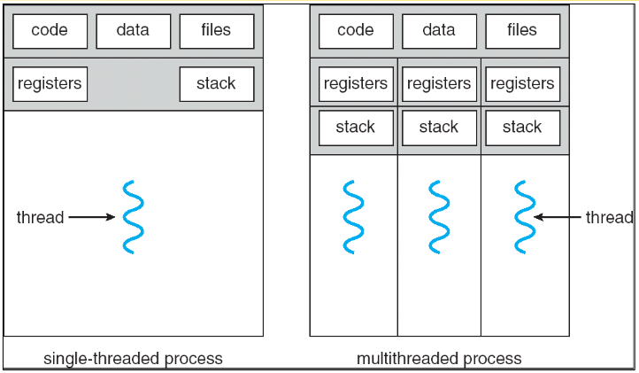
Exemplos:
- Um editor de textos, várias tarefas (typing, spell checking, printing…)
- Um servidor web, cada requisição atendida por uma thread.
Em um computador convencional (single core):
- Cada processo gera pelo menos uma thread (fluxo de execução principal).
- Um processo é escalonado para execução, logo uma thread está em execução por vez.
- Quando uma thread pára (por exemplo, devido a um page fault:
- O estado da thread é guardado (registradores, …)
- O estado de outra thread em espera é carregado no processador e inicia-se sua execução.
- O que é chamado de troca de contexto (context switching).
- Para o usuário parece que todas as threads executam simultaneamente.
Em um computador com processador multicore tem-se a possibilidade de paralelismo físico.
Concorrência: Múltiplas tarefas estão logicamente ativas em um mesmo momento.
Paralelismo: Múltiplas tarefas estão realmente ativas em um mesmo momento.

3 Introdução
3.1 Introdução
[block]{Threads}
- O que é uma ?
- um fluxo em execução.
- um processo leve ().
- unidade básica que o SO aloca tempo de processador.
- Por que usar threads?
- Dividir tarefas de uma aplicação (ex: navegador Web).
- Compartilhamento de espaço de endereçamento.
- Tempo de criação e finalização.
- Concorrência e paralelismo.
[/block]
3.2 Threads: Exemplo de uso - Processador de texto
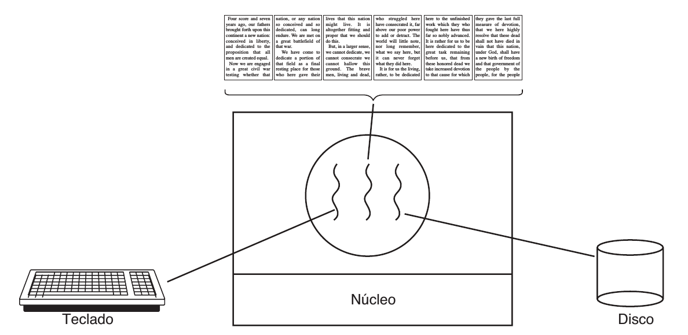
3.3 Threads: Exemplo de uso - Servidor Web
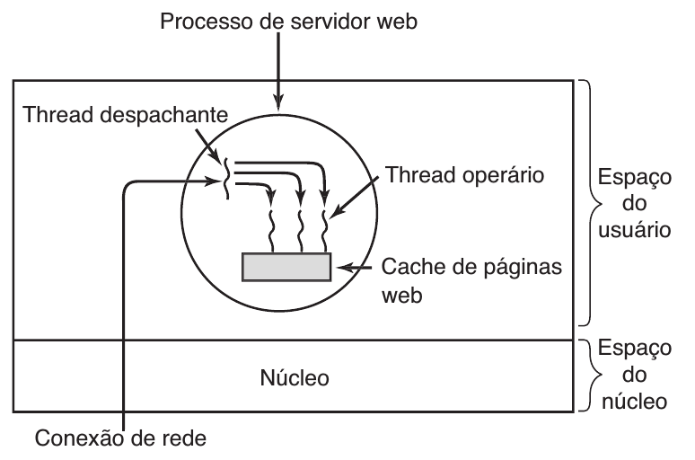
3.4 Threads: Implementação
- Modelos clássicos:
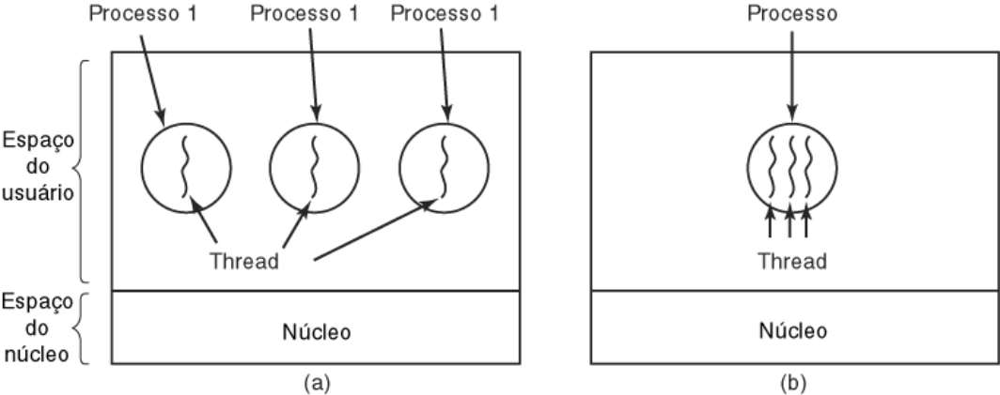
- Quais recursos as threads compartilham em um processo?
[columns]
[column=.45]
[block]{Compartilhado entre threads}
- Espaço de endereçamento.
- Variáveis globais.
- Arquivos abertos.
- Processos filhos.
- Alarmes pendentes.
- Sinais e tratadores de sinais.
- Estatísticas de execução.
- Permissões de acesso.
[/block]
[column=.45]
[block]{Exclusivo por thread}
- Thread ID
- Contador de programa.
- Registradores.
- Pilha (variáveis locais e endereços de retorno).
- Estado.
- Prioridade.
[/block]
[/columns]
[framebreak]
- Modelos clássicos - Detalhes:
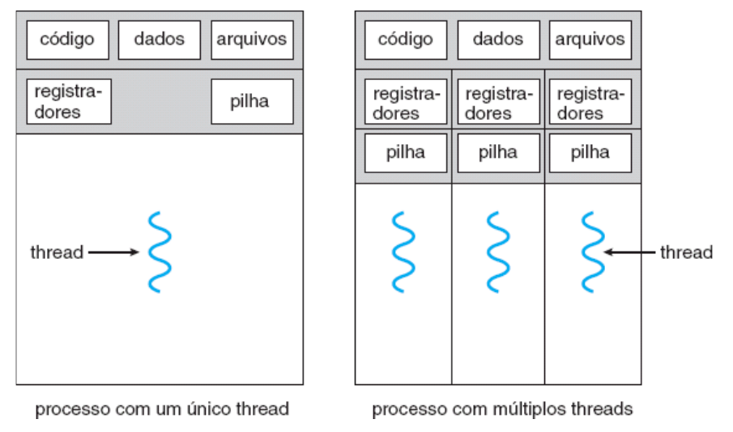
- Cada processo tem uma thread principal.
- Se um processo for multithread terá a thread principal e as threads que criar.
[framebreak]
[block]{Tipos de Implementação de Threads}
- Threads do Usuário (): Gerenciamento de thread realizado por biblioteca em nível de usuário.
- Threads do Núcleo (): Gerenciamento de thread realizado diretamente pelo núcleo do SO. Threads admitidos diretamente pelo kernel.
[/block]
3.5 Threads: Implementação
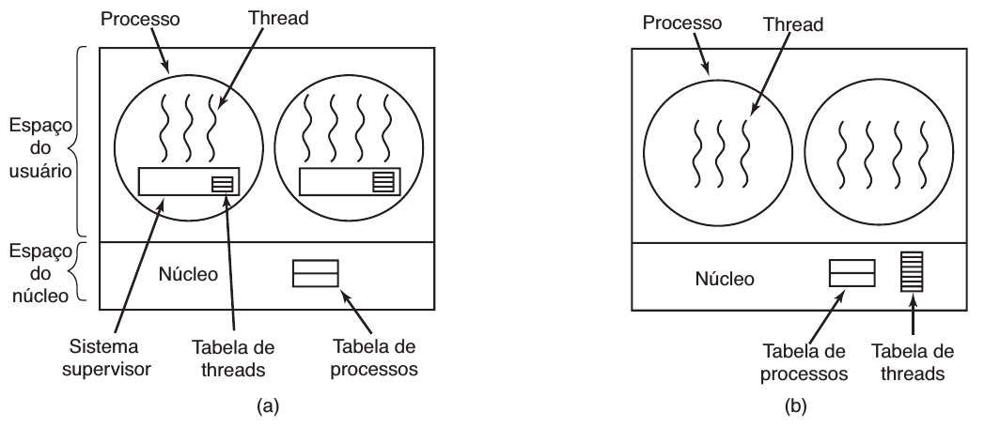
3.6 Threads: Nível de Usuário
- Executam operações de suporte a threads no espaço do usuário.
- SO mapeia threads de um processo multithread para um único contexto de execução.
- Vantagens:
- Escalonamento controlado pela biblioteca possibilita otimizar o desempenho.
- Chaveamento de contexto em nível de usuário. A sincronização é realizada fora do núcleo, e isso evita chaveamento de contexto.
- Portabilidade maior.
- Desvantagens:
- Núcleo considera o processo multithread como um único thread.
- Operações de E/S podem bloquear todas as threads. Desempenho pode ficar abaixo do ideal.
- Escalonamento limitado a um único núcleo.
3.7 Threads: Nível de Núcleo
- Mapeia cada thread para o seu próprio contexto de execução.
- O núcleo reconhece cada thread individualmente.
- Vantagens:
- paralelismo.
- divisão justa do processador.
- Desvantagens:
- custo do chaveamento de contexto.
- menor portabilidade. Sobrecarga decorrente do chaveamento de contexto e menor portabilidade em virtude de as APIs serem específicas ao sistema operacional.
- Os threads de núcleo nem sempre são a solução ideal para as aplicações.
3.8 Threads: Implementação Híbrida
Consiste em mapear números arbitrários de threads de usuário para threads de núcleo.
Multiplexação de threads de usuário sobre threads de núcleo.
[columns]
[column=0.5]
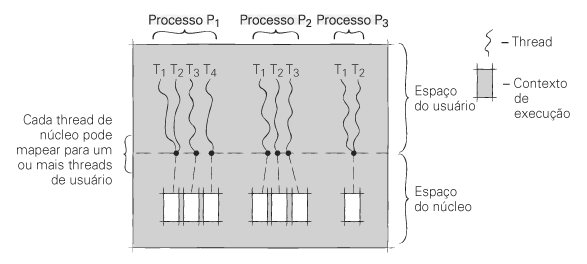
[column=0.5]
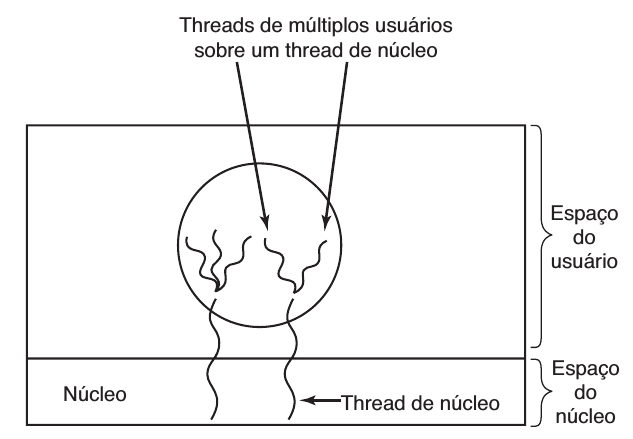
[/columns]
[framebreak]
- Necessitam de comunicação para manter o número apropriado de threads de núcleo alocados à aplicação.
- O mecanismo de oferece – um mecanismo de comunicação do núcleo para a biblioteca de threads.
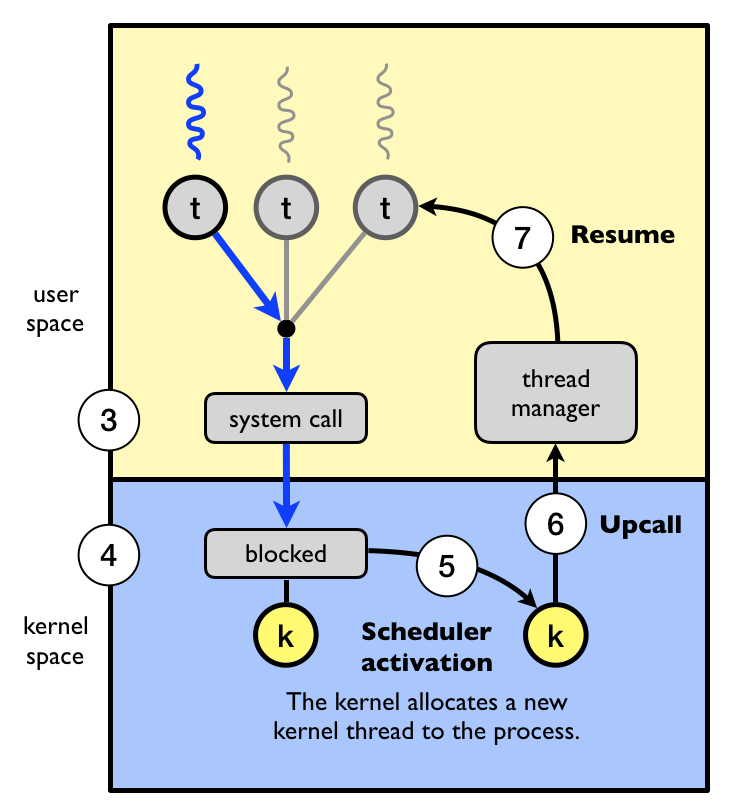
3.9 Threads: Modelos de mapeamento
- Muitos-para-um: Solaris Green Threads, GNU Portable Threads.
- Um-para-um: Windows NT/XP/2000, Linux, Solaris 9 em diante
- Muitos-para-muitos (dois níveis): Solaris \(<=\) 8, Windows NT/2000 fiber.
- Modelo de dois níveis: Semelhante a M:M, exceto por permitir que um thread do usuário seja ligado ao thread do kernel. IRIX, HP-UX, Tru64 UNIX, Solaris 8 e mais antigos.
[columns]
[column=.20]
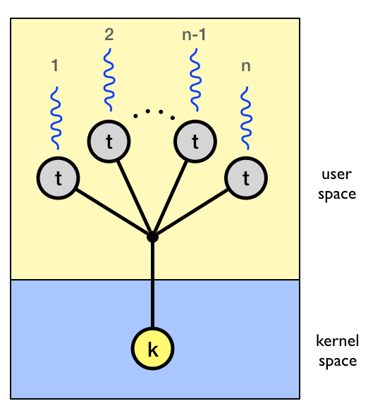
[column=.20]
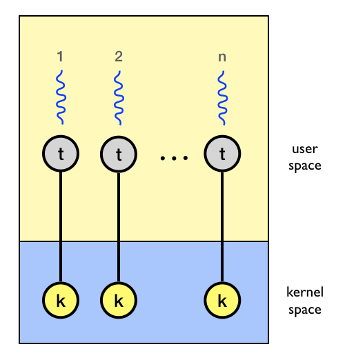
[column=.20]
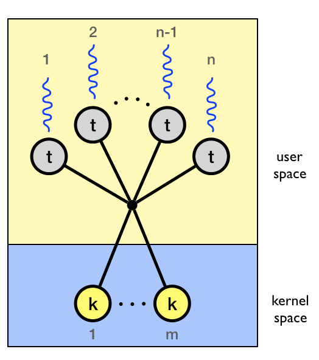
[column=.20]
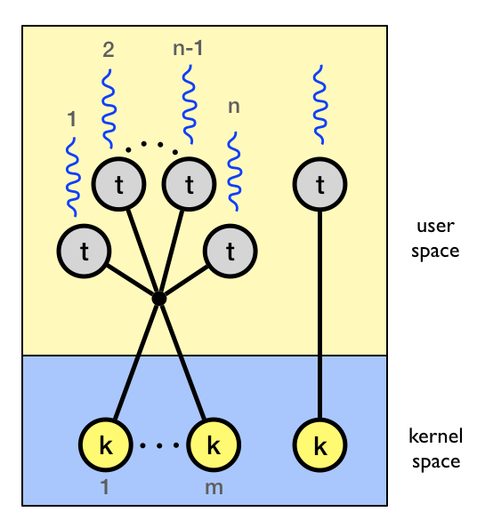
[/columns]
3.10 Threads: Tratamento de sinais
- Sinais são usados em sistemas UNIX para notificar um processo de que ocorreu um evento em particular;
- Opções para tratamento de sinais com threads:
- Entregar o sinal a thread de destino no processo.
- Entregar o sinal a todas threads no processo.
- Entregar o sinal a threads específicas no processo.
- Atribuir uma área específica para receber todos os sinais para o processo.
- As threads normalmente estão associadas a um conjunto de sinais pendentes que são emitidos quando são executadas.
- As threads podem mascarar todos os sinais, exceto aqueles que deseja receber.
3.11 Threads: Operações
[block]{Operações com threads}
- criação e finalização.
- sincronização ().
- escalonamento ({priority, yield}).
- sinalização (síncrona ou assíncrona - processo externo).
- cancelamento (assíncrono, adiado).
- suspensão (parada) e ativação (retomada).
- reuso ()
[/block]
3.12 POSIX
- Uma API padrão POSIX (IEEE 1003.1c) para criação e sincronismo de thread.
- A API especifica o comportamento da biblioteca de threads, a implementação fica para o desenvolvimento da biblioteca.
- Comum em sistemas operacionais UNIX (Solaris, Linux, Mac OS X).
3.13 POSIX e Pthreads
- Os threads que usam a API de thread POSIX são chamados de Pthreads.
- A especificação POSIX determina que os registradores do processador, a pilha e a máscara de sinal sejam mantidos individualmente para cada thread.
- A especificação POSIX especifica como os sistemas operacionais devem emitir sinais a Pthreads, além de especificar diversos modos de cancelamento de thread.
3.14 Threads no Linux
Linux se refere a eles como tarefas ao invés de threads.
- O Linux aloca o mesmo tipo de descritor para processos e tarefas.
- Para criar tarefas-filhas, o Linux usa a chamada fork, baseada no Unix.
- Para habilitar os threads, o Linux oferece uma versão modificada, denominada clone.
A criação de thread é feita por meio da chamada do sistema
clone()-Clone aceita argumentos que determinam os recursos que devem ser compartilhados com a tarefa-filha.
clone()permite que uma tarefa filha compartilhe o espaço de endereços da tarefa pai (processo)
[framebreak]
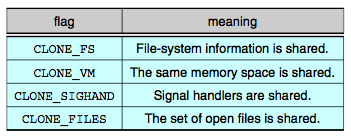
[framebreak]
- Diagrama de transição de estado de tarefa do Linux.
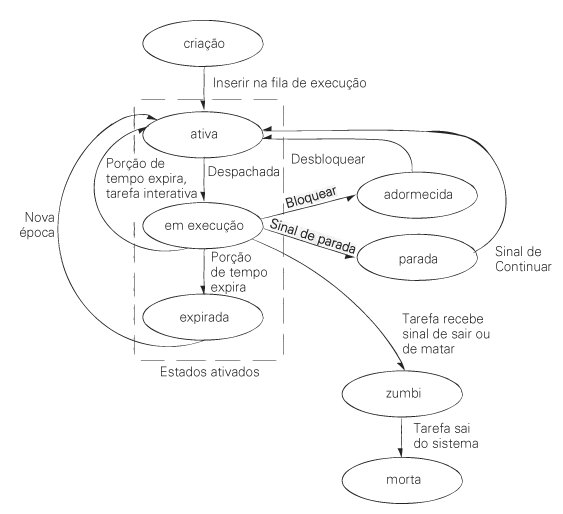
4 Implementação de Threads
4.1 Implementação de Threads em Linguagens de Programação
- Basicamente em todas as linguagens que suportam threads a implementação segue a ideia de se ter uma função que é o código a ser executado pela threads quando ela for criada.
- Na linguagem C, podemos utilizar a biblioteca Pthreads do GNU/Linux.
- Implementa a API padrão POSIX (IEEE 1003.1c) para criação e sincronismo de threads.
- A API especifica o comportamento da biblioteca de threads, a implementação fica para o desenvolvimento da biblioteca.
- A especificação
POSIXdetermina que os registradores do processador, a pilha e a máscara de sinal sejam mantidos individualmente para cada thread. - Detalhando como os sistemas operacionais devem emitir sinais a Pthreads, além de especificar diversos modos de cancelamento de thread.
- Básico de
Pthreads:
[exampleblock]{Criar uma nova thread}
int pthread_create(pthread_t * thread, const pthread_attr_t * attr,
void * (*start_routine)(void *), void *arg);[/exampleblock]
pthread_create(&thread, attr, funcao, arg): Inicializa e executa a thread. Recebe a variável da thread, atributos (passar NULL usa o padrão), a função executável e o argumento a ser transmitido para a função.
Retorno: - 0 se conseguiu criar a thread. - Ou um código de erro. - Veja: http://linux.die.net/man/3/pthread_create
[framebreak]
[exampleblock]{Aguardar pelo término de outra thread}
int pthread_join(pthread_t th, void **thread_return);pthread_join(thread, retval): Suspende a thread principal até que a thread especificada termine. Essencial para evitar que a função main() encerre antes do término dos processos filhos.
A função pthread_join retorna um valor do tipo int: 0 se a operação for bem-sucedida ou um código de erro (valor positivo diferente de zero) caso falhe.
Valores de Retorno da Função
0: Sucesso. A thread aguardada foi finalizada e seus recursos foram liberados.
EDEADLK: Deadlock detectado (por exemplo, se a thread tentar aguardar a si mesma).
EINVAL: A thread não é associável (joinable) — ocorre se ela foi criada como detached, se já passou por pthread_detach ou se outra thread já fez o join nela.
ESRCH: Nenhuma thread com o ID fornecido foi encontrada.
Diferença importante: O retorno da função pthread_join indica apenas se o processo de sincronização funcionou. Se você precisa obter o valor retornado pela thread finalizada (enviado via return ou pthread_exit), esse valor é gravado no ponteiro informado no segundo argumento (void **retval).
- A thread principal que cria outras threads deve aguardar o término das threads filhas.
- Pois pode acontecer da thread principal terminar antes.
- Veja: http://linux.die.net/man/3/pthread_join
[/exampleblock]
[block]{Terminar a thread}
void pthread_exit(void *retval);pthread_exit(retval): Usada para finalizar manualmente a thread corrente devolvendo um valor opcional.
[/block]
[alertblock]{Cancelar a execução da thread}
int pthread_cancel(pthread_t thread);[/alertblock]
[alertblock]{Enviar um sinal para a thread}
#include <signal.h>
int pthread_kill(pthread_t thread, int sig);[/alertblock]
- Tutoriais: http://www.yolinux.com/TUTORIALS/LinuxTutorialPosixThreads.html , https://computing.llnl.gov/tutorials/pthreads
[framebreak]
4.2 Exemplos
O Código 4.I apresenta um código que recupera os identificadores (ids) do processo e das threads relacionadas a ele. A thread principal de execução do código do próprio processo e a thread criada com a chamada à função pthread_create(...).
exemplo-pid-ppid-threadid.c
#define _GNU_SOURCE
#include <stdio.h>
#include <unistd.h>
#include <sys/syscall.h>
#include <sys/types.h>
#include <pthread.h>
void* thread_func(void* arg) {
printf("Thread[%lu]: Thread. PID: %d, PPID: %d, Kernel TID: %ld, Pthread TID: %ld\n", (long int) pthread_self(), getpid(), getppid(), syscall(SYS_gettid), (long int) pthread_self());
return NULL;
}
int main() {
pthread_t tid;
printf("Thread[%lu]: Principal. PID: %d, PPID: %d, Kernel TID: %ld, Pthread TID: %ld\n", (long int) pthread_self(), getpid(), getppid(), syscall(SYS_gettid), (long int) pthread_self());
pthread_create(&tid, NULL, thread_func, NULL);
pthread_join(tid, NULL);
return 0;
}Para compilar o código dos exemplos, podemos utilizar o compilador gcc ou o clang, o programa deve ser compilado com a flag -pthread ou -lpthread, conforme apresentado no Código 4.II.
Terminal
[exemplo-pid-ppid-threadid]$ clang -lpthread exemplo-pid-ppid-threadid.c -o exemplo-pid-ppid-threadid-clang.exe
[exemplo-pid-ppid-threadid]$ ./exemplo-pid-ppid-threadid-clang.exe
Thread[140689466234688]: Principal. PID: 145090, PPID: 136279, Kernel TID: 145090, Pthread TID: 140689466234688
Thread[140689463572160]: Thread. PID: 145090, PPID: 136279, Kernel TID: 145091, Pthread TID: 140689463572160
[exemplo-pid-ppid-threadid]$ gcc -lpthread exemplo-pid-ppid-threadid.c -o exemplo-pid-ppid-threadid-gcc.exe
[exemplo-pid-ppid-threadid]$ ./exemplo-pid-ppid-threadid-gcc.exe
Thread[140337874589504]: Principal. PID: 145136, PPID: 136279, Kernel TID: 145136, Pthread TID: 140337874589504
Thread[140337871845056]: Thread. PID: 145136, PPID: 136279, Kernel TID: 145137, Pthread TID: 140337871845056
[exemplo-pid-ppid-threadid]$ No processo de compilação podemos utilizar o automatizador make que irá executar os alvos definidos no arquivo Makefile, quando este estiver disponível no diretório de cada exemplo. O Código 4.III apresenta os comandos para esse exemplo.
Makefile
# Variáveis.
CC = gcc
CFLAGS = -Wall -lpthread
TARGET = exemplo-pid-ppid-threadid
EXT = exe
# Alvo padrão executado ao digitar apenas 'make'.
all: $(TARGET)
# Regra para gerar o executável final.
$(TARGET): $(TARGET).o
$(CC) $(CFLAGS) $^ -o $(TARGET).$(EXT)
# Regra para compilar o arquivo objeto.o.
$(TARGET).o: $(TARGET).c
$(CC) $(CFLAGS) -c $^
# Alvo para limpar arquivos gerados.
clean:
rm -f *.o $(TARGET).$(EXT)O Código 4.IV apresenta a compilação utilizando o make. Executar o make por padrão irá executar o comando de compilação que irá gerar o arquivo do executável do exemplo.
Terminal
[exemplo-pid-ppid-threadid]$ ls
exemplo-pid-ppid-threadid.c Makefile
[exemplo-pid-ppid-threadid]$ make
gcc -Wall -lpthread -c exemplo-pid-ppid-threadid.c
gcc -Wall -lpthread exemplo-pid-ppid-threadid.o -o exemplo-pid-ppid-threadid.exe
[exemplo-pid-ppid-threadid]$ ls
exemplo-pid-ppid-threadid.c exemplo-pid-ppid-threadid.exe exemplo-pid-ppid-threadid.o Makefile
[exemplo-pid-ppid-threadid]$ Mais sobre Makefile pode ser visto no site makefiletutorial.com.
A execução do binário do exemplo pode ser vista no Código 4.V, são listados os identificadores do processo criado para gerenciar nosso programa (PID), o identificador do processo pai (terminal, bash) que criou o processo do nosso programa (PPID) e os identificadores da thread no _kernel do Linux e na biblioteca pthread.
Terminal
[exemplo-pid-ppid-threadid]$ ./exemplo-pid-ppid-threadid.exe
Thread[140546732336960]: Principal. PID: 136568, PPID: 136279, Kernel TID: 136568, Pthread TID: 140546732336960
Thread[140546729309888]: Thread. PID: 136568, PPID: 136279, Kernel TID: 136569, Pthread TID: 140546729309888
[exemplo-pid-ppid-threadid]$ ps -aux | grep bash
rag 136279 0.1 0.0 12336 10660 pts/3 Ss 09:13 0:00 /bin/bash
rag 136574 0.0 0.0 7096 4504 pts/3 S+ 09:13 0:00 grep --color=auto bash
[rag@backporting exemplo-pid-ppid-threadid]$- Na linguagem
Ccom Pthreads:
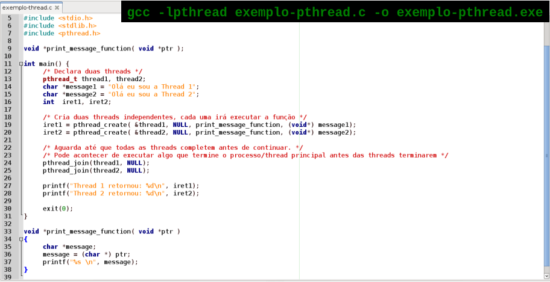
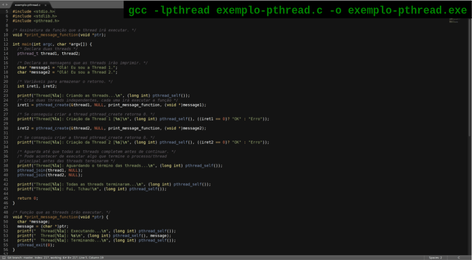
[block]{Na linguagem C com Pthreads}
#include <pthread.h>
void *function( void *ptr ) {
char *message;
message = (char *) ptr;
printf("%s \n", message);
}
int main() {
/* Declara a thread */
pthread_t thread1;
char *message1 = "Ola eu sou a Thread 1";
int iret1;
/* Cria a thread para executar a funcao. */
iret1 = pthread_create( &thread1, NULL, function, (void*) message1);
/* Aguarda ate que todas as threads completem antes de continuar. */
pthread_join(thread1, NULL);
printf("Thread 1 retornou: %d\n", iret1);
exit(0);
}[/block]
[framebreak]
- Em Java existem pelo menos duas formas de criarmos threads.
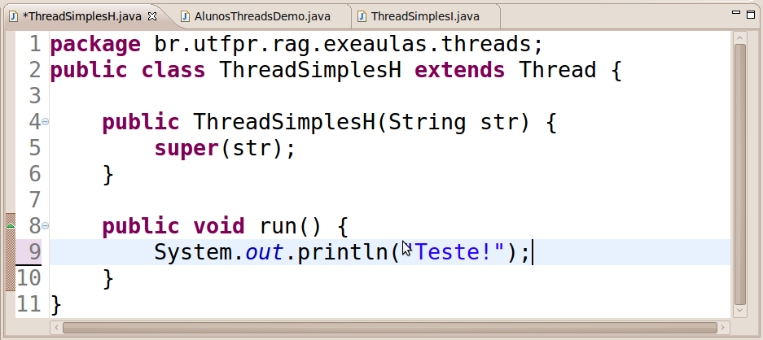
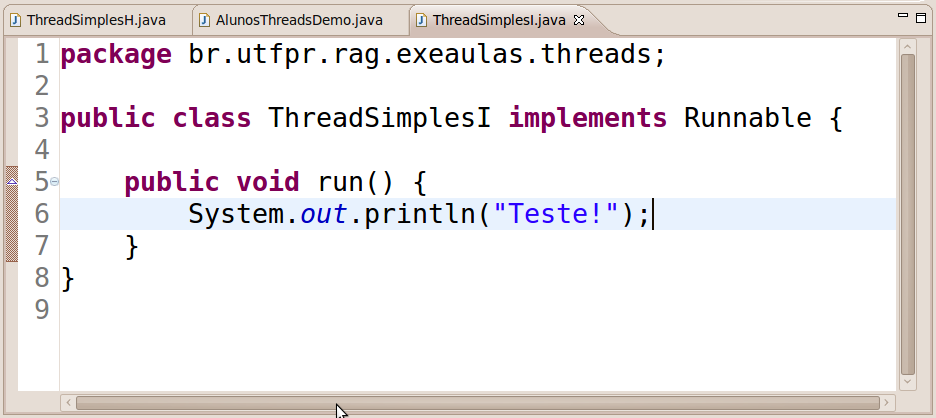
[framebreak]
- Em Python também podemos criar threads:
[columns]
[column=0.5]
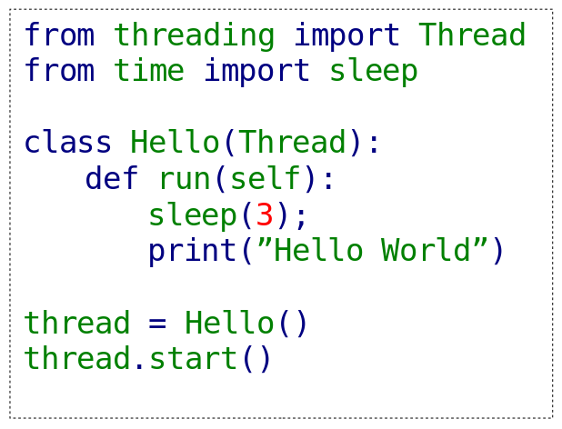
[column=0.5]
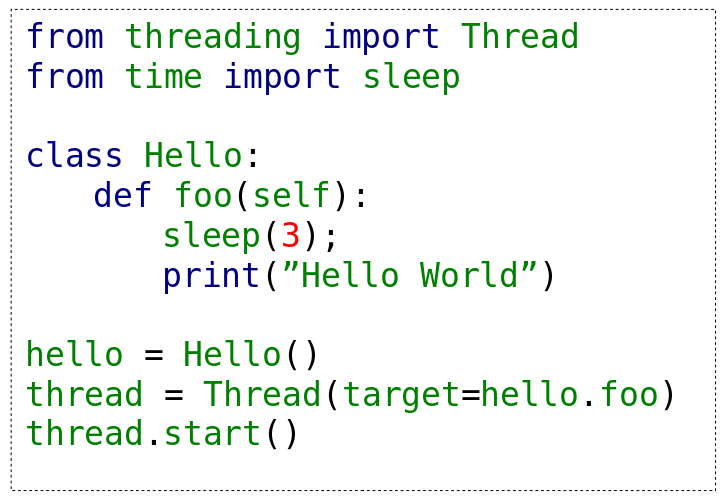
[/columns]
4.3 Implementação de Paralelismo com Cilk
- Paralelismo com a Extensão Cilk.
[columns]
[column=0.5]
#include <stdio.h>
#include <cilk/cilk.h>
static void hello(){
int i=0;
for(i=0;i<1000000;i++)
printf("");
printf("Hello ");
}
static void world(){
int i=0;
for(i=0;i<1000000;i++)
printf("");
printf("world! ");
}
int main(){
cilk_spawn hello();
cilk_spawn world();
cilk_sync;
printf("Done! ");
}[column=0.5]
#include <stdio.h>
#include <pthread.h>
int main(){
int sum = 0;
int i = 0;
pthread_mutex_t m;
pthread_mutex_init(&m, NULL);
cilk_for (i = 0; i <= 1000; i++){
// lock.
pthread_mutex_lock(&m);
sum += i;
// unlock.
pthread_mutex_unlock(&m);
}
printf("%d\n",sum);
} [/columns]
4.4 Implementação de Paralelismo com OpenMP
- Paralelismo com a Extensão
OpenMP:
/* Compile:
* gcc -fopenmp example-parallel-num_threads.c -o
* example-parallel-num_threads.exe
* or
* make omp-parallel-num_threads
*/
#include <stdio.h>
#include <stdlib.h>
#include <pthread.h>
#ifdef _OPENMP
#include <omp.h>
#else
#define omp_get_thread_num() 0
#define omp_get_num_threads() 1
#define omp_get_num_procs() \
(system("cat /proc/cpuinfo | grep 'processor' | wc -l"))
#endifint main() {
int id, i;
printf("Thread[%d][%lu]: Before parallel region.\n", omp_get_thread_num(), (long int) pthread_self());
#pragma omp parallel num_threads(4) default(none) private(id)
{
// All threads executes this code.
id = omp_get_thread_num();
#pragma omp for
for(i=0; i<16; i++){
printf("Thread[%d][%lu]: Working in %lu loop iteration.\n", id, (long int) pthread_self(), i);
}
}
printf("Thread[%d][%lu]: After parallel region...\n", omp_get_thread_num(), (long int) pthread_self());
return 0;
}5 Prática: Programação com Threads no Linux
5.1 Introdução
[alertblock]{Objetivos}
- Compreender algumas das principais funções da biblioteca .
- Criar threads no SO GNU/Linux.
- Desenvolver aplicações simples multithreads.
[/alertblock]
5.2 POSIX e Threads
POSIX(IEEE 1003.1c) especifica uma API para criação e sincronismo de threads.- A API especifica o comportamento da biblioteca de threads, a implementação fica para o desenvolvimento da biblioteca.
- Comum em sistemas operacionais UNIX (Solaris, Linux, Mac OS X).
- Os threads que usam a API de thread POSIX são chamados de Pthreads.
5.3 Threads no Linux
- Aloca o mesmo bloco de controle para threads e processos.
- Faz uso da chamada de sistema .
- As threads compartilham o espaço de endereço do processo.
- Os estados que as threads assumem são os mesmos dos processos.
- As Pthreads são implementadas como nível núcleo.
6 Biblioteca pthread
Identificadores da Thread.
https://courses.cs.vt.edu/cs3214/spring2022/questions/threadid
6.1 Criar novas threads
int pthread_create (pthread_t *thread,
const pthread_attr_t *attr,
void * (*start_routine)(void *),
void *arg);- : identificador da thread.
- : atributos de configuração da thread. Se NULL, usa os padrões.
- : função com o código da thread.
- : parâmetro único para passagem de valores para a thread.
- : 0 em caso de sucesso ou um código de erro.
6.2 Finalizar threads
void pthread_exit (void *retval);- : valor de retorno para a thread que aguarda ().
6.3 Aguarda término de threads
int pthread_join (pthread_t thread,
void **retval);- : identificador da thread a ser aguardada.
- : valor devolvido pela função .
- : 0 em caso de sucesso ou um código de erro.
6.4 Exemplo: Criação e finalização de threads
#include <stdio.h>
#include <stdlib.h> // exit
#include <unistd.h> // sleep
#include <pthread.h> // pthread\_t, pthread\_create(), pthread\_join(), pthread\_exit()
/** funcao que implementa o fluxo da thread */
void *print_message (void *ptr){
char *message;
message = (char *) ptr; //casting - coersao explicita
sleep(2);
printf("%s \n", message);
//pthread\_exit(NULL);
return NULL;
}
/* fluxo principal - thread 'main' */
int main() {
/* Declara duas threads */
pthread_t thread1, thread2;
//pthread\_t thread[2];
char *msg1 = "Eu sou a Thread 1.";
char *msg2 = "Eu sou a Thread 2.";
int iret1, iret2;
/* Cria duas threads independentes, cada uma executa a funcao */
iret1 = pthread_create( &thread1, NULL, print_message, (void*) msg1);
iret2 = pthread_create( &thread2, NULL, print_message, (void*) msg2);
printf("Thread 1 foi criada com sucesso?: %d\n", iret1);
printf("Thread 2 foi criada com sucesso?: %d\n", iret2);
/* Aguarda threads finalizarem antes de continuar. */
pthread_join(thread1, NULL);
pthread_join(thread2, NULL);
printf("MAIN - FIM\n");
//pthread\_exit(0);
exit(0);
}6.5 Cancelamento de threads
int pthread_cancel (pthread_t thread);- : identificador da thread.
- : 0 em caso de sucesso ou um código de erro.
Cria pontos de cancelamento de threads:
void pthread_testcancel(void);Ativa ou desativa o cancelamento de threads
int pthread_setcancelstate (int state,
int *oldstate);- : modifica o estado para ou .
- : armazena o estado antigo.
- : 0 em caso de sucesso ou um código de erro.
Modifica o tipo do cancelamento de threads
int pthread_setcanceltype (int type,
int *oldtype);- : modifica o tipo de cancelamento para ou .
- : armazena o antigo tipo.
- : 0 em caso de sucesso ou um código de erro.
6.6 Exemplo: Cancelamento de threads
#include <pthread.h> // pthread\_testcancel(), pthread\_setcancelstate(), pthread\_cancel()
#include <stdio.h>
#include <unistd.h>
/* tarefa para ser executada como thread e testar o cancelamento */
void *task_do_nothing (void *parm){
int i = 1;
printf("THREAD - thread executada.\n");
//pthread\_setcancelstate(PTHREAD\_CANCEL\_DISABLE, NULL);
/* altera o tipo de cancelamento para assincrono - padrao deferred (adiado) */
//pthread\_setcanceltype(PTHREAD\_CANCEL\_ASYNCHRONOUS, NULL);
for (;;i++) {
printf("THREAD - thread em laco %d\n", i); //ponto de cancelamento
/* testa o cancelamento */
//pthread\_testcancel();
sleep(1);
if (i == 5) {
/* Como o opcao de cancelamento foi desabilitada, ativar agora */
printf("THREAD - ativa o estado de cancelamento\n");
pthread_setcancelstate(PTHREAD_CANCEL_ENABLE, NULL);
}
} // for
return NULL;
}
/* fluxo principal (thread principal) */
int main(int argc, char **argv){
pthread_t thread;
int status = 0;
printf("MAIN - Iniciando a thread principal (main)\n");
/* cria a thread com atributos padroes */
printf("MAIN - Cria a thread com atributos padroes \n");
status = pthread_create(&thread, NULL, task_do_nothing, NULL);
/* aguarda um tempo antes de solicitar o cancelamento */
sleep(2);
printf("MAIN - Cancelar a thread\n");
status = pthread_cancel(thread);
printf("MAIN - Retorno de pthread_cancel %d\n", status);
pthread_join(thread, NULL);
printf("MAIN - Main completed\n");
pthread_exit(NULL);
return 0;
}6.7 Paralelismo com Threads
- Execução concorrente de uma mesma tarefa em diferentes elementos de dados.
- Execução concorrente de diferentes tarefas nos mesmos ou diferentes dados.
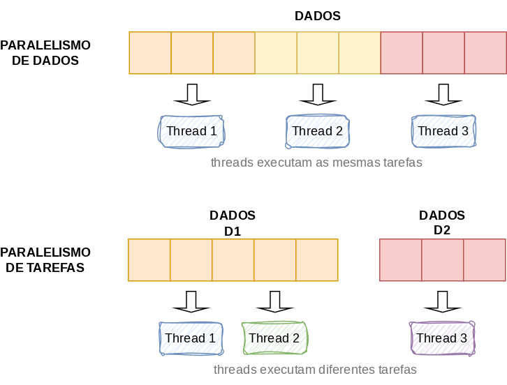
7 Atividades
7.1 Atividades
- Execute os códigos dos exemplos da Aula.
8 Prática: Soma de Vetores Sequencial
- Execute o exemplo vectoradd versão sequencial (sem o uso de qualquer recurso de paralelismo)
- Código fonte em:
src/vectoradd
float h_a[N];
float h_b[N];
float h_c[N];
int main(int argc, char **argv) {
int i;
/* Inicializacao dos vetores. */
init_array();
/* Calculo. */
for (i = 0; i < N; i++) {
h_c[i] = h_a[i] + h_b[i];
}
/* Resultados. */
print_array();
check_result();
return 0;
}9 Prática: Soma de Vetores Paralelo: Versão estática
- Analise as alterações que foram feitas no código do exemplo vectoradd para a utilização de pthreads (books/daglib/0085131?), com particionamento
estáticodas iterações do laço. - Código fonte em:
src/vectoradd-pthreads-distribuicao-estatica
void *vecadd(void *ptr) {
int *id;
int i, ii, ff;
id = (int *) ptr;
ii = (*id) * partition;
ff = ii + partition; // ff = (ii + 1) * partition;
printf(" Thread[%lu]: Particao prevista: %d [%d..%d]: %d.\n", (long int) pthread_self(), *id, ii, ff, (ff - ii));
/* A sobra n - ff sempre sera maior que uma particao ate a penultima thread. Na última thread se sobrar
algumas iterações no final, a ultima thread assume estendendo seu ff para n. */
if((n - ff) < partition){
ff = n;
}
printf(" Thread[%lu]: Executando sobre particao: %d [%d..%d]: %d.\n", (long int) pthread_self(),
*id, ii, ff, (ff - ii));
for (i = ii; i < ff; i++) {
h_c[i] = h_a[i] + h_b[i];
}
printf(" Thread[%lu]: Terminando...\n", (long int) pthread_self());
pthread_exit(0);
}
int main(int argc, char *argv[]) {
int i, num_elementos, num_threads = 0;
if(argc < 3){
printf("Uso: %s <size> <num_threads>\n", argv[0]);
exit(0);
}
num_elementos = atoi(argv[1]);
num_threads = atoi(argv[2]);
partition = num_elementos / num_threads;
n = num_elementos;
printf("num_elementos: %d num_threads: %d\n", num_elementos, num_threads);
h_a = (float *) malloc(num_elementos * sizeof(float));
h_b = (float *) malloc(num_elementos * sizeof(float));
h_c = (float *) malloc(num_elementos * sizeof(float));
init_array(num_elementos);
pthread_t *threads;
threads = (pthread_t *) malloc(num_threads * sizeof(pthread_t));
int *irets;
irets = (int *) malloc (num_threads * sizeof(int));
int *ids;
ids = (int *) malloc (num_threads * sizeof(int));
for(i=0; i<num_threads; i++){
ids[i] = i;
irets[i] = pthread_create(&threads[i], NULL, vecadd, (void *)&ids[i]);
printf("Thread[%lu]: Criacao da Thread %d com o id: %lu [%s]\n", (long int) pthread_self(), i,
threads[i], ((irets[i] == 0)? "OK" : "Erro"));
}
for(i=0; i<num_threads; i++){
printf("Thread[%lu]: Aguardando o termino das threads...\n", (long int) pthread_self());
pthread_join(threads[i], NULL);
}
printf("Thread[%lu]: Todas as threads terminaram...\n", (long int) pthread_self());
printf("Thread[%lu]: Imprimindo o resultado.\n", (long int) pthread_self());
printf("Thread[%lu]: Verificando o resultado.\n", (long int) pthread_self());
check_result(num_elementos);
printf("Thread[%lu]: Fui, Tchau!\n", (long int) pthread_self());
return 0;
}10 Prática: Soma de Vetores Paralelo: Versão dinâmica
- Analise as alterações que foram feitas no código do exemplo vectoradd para a utilização de pthreads (books/daglib/0085131?), com particionamento
dinâmicodas iterações do laço. - Código fonte em:
src/vectoradd-pthreads-distribuicao-dinamica
bool get_next_loop_partition(long *ii, long *ff) {
bool ret = true;
*ii = 0;
*ff = 0;
fprintf(stdout, "Thread[%lu]: Trying to get the next partition.\n", (long int) pthread_self());
sem_wait(&mutex);
if(work_finished){
ret = false;
}
else{
*ii = last_assigned;
*ff = last_assigned + partition;
if (*ff > total_of_iterations){
*ff = total_of_iterations;
}
last_assigned = *ff;
ret = true;
work_finished = (last_assigned == total_of_iterations);
}
sem_post(&mutex);
fprintf(stdout, "Thread[%lu]: Got the partition [%lu, %lu].\n", (long int) pthread_self(), *ii, *ff);
return ret;
}
void *vecadd(void *ptr) {
long *id;
long i, ii, ff;
id = (long *) ptr;
bool have_work = false;
while ((have_work = get_next_loop_partition(&ii, &ff)) != false){
fprintf(stdout, " Thread[%lu,%lu]: Working on partition: [%d..%d]: %d.\n", *id, (long int) pthread_self(),
ii, ff, (ff - ii));
for (i = ii; i < ff; i++) {
h_c[i] = h_a[i] + h_b[i];
}
}
if(!have_work){
fprintf(stdout, " Thread[%lu]: No work to do.\n", (long int) pthread_self());
}
fprintf(stdout, " Thread[%lu]: Exiting.\n", (long int) pthread_self());
pthread_exit(0);
}
int main(int argc, char *argv[]) {
int i, num_elements, num_threads = 0;
if(argc < 4){
fprintf(stderr, "Uso: %s <num_elements> <num_threads> <partition_size>\n", argv[0]);
exit(0);
}
num_elements = atoi(argv[1]);
num_threads = atoi(argv[2]);
partition = atoi(argv[3]);
total_of_iterations = num_elements;
fprintf(stdout, "Thread[%lu]: num_elements: %d num_threads: %d.\n", (long int) pthread_self(), num_elements,
num_threads);
fprintf(stdout, "Thread[%lu]: Allocating the arrays.\n", (long int) pthread_self());
h_a = (float *) malloc(num_elements * sizeof(float));
h_b = (float *) malloc(num_elements * sizeof(float));
h_c = (float *) malloc(num_elements * sizeof(float));
init_array(num_elements);
pthread_t *threads;
threads = (pthread_t *) malloc(num_threads * sizeof(pthread_t));
int *irets;
irets = (int *) malloc (num_threads * sizeof(int));
long *ids;
ids = (long *) malloc (num_threads * sizeof(long));
sem_init(&mutex, 0, 1); /* initialize mutex to 1 - binary semaphore */
/* second param = 0 - semaphore is local */
work_finished = false;
fprintf(stdout, "Thread[%lu]: Creating the Threads.\n", (long int) pthread_self());
for(i=0; i<num_threads; i++){
ids[i] = i;
irets[i] = pthread_create(&threads[i], NULL, vecadd, (void *)&ids[i]);
fprintf(stdout, "Thread[%lu]: Create Thread %d with id: %lu [%s]\n", (long int) pthread_self(), i, threads[i],
((irets[i] == 0)? "OK" : "Error"));
}
for(i=0; i<num_threads; i++){
fprintf(stdout, "Thread[%lu]: Waiting for ending of threads execution.\n", (long int) pthread_self());
pthread_join(threads[i], NULL);
}
fprintf(stdout, "Thread[%lu]: All threads were finished.\n", (long int) pthread_self());
fprintf(stdout, "Thread[%lu]: Printing the result.\n", (long int) pthread_self());
fprintf(stdout, "Thread[%lu]: Checking the result.\n", (long int) pthread_self());
check_result(num_elements);
fprintf(stdout, "Thread[%lu]: Fui, Tchau!\n", (long int) pthread_self());
return 0;
}11 Relatório
- Escreva um relatório sobre a prática, colocando códigos e figuras da execução. Quais alterações foram necessárias para a execução das versões paralelas do soma de vetores utilizando pthreads com particionamento estático e dinâmico (quantidade de código, desempenho das versões sequencial e paralelas (estática e dinâmica) para tamanhos de dados suficientemente grandes).
12 Leitura Recomendada
12.1 Leitura Recomendada
[alertblock]{Capítulo 2: Processos e Threads}
Seção 2.2. Threads
TANENBAUM, Andrew S. Sistemas operacionais modernos. 3. ed.~São Paulo, SP: Pearson, c2008. xvi, 654 p.~ISBN 9788576052371. (Tanenbaum?)
[/alertblock]
[exampleblock]{Capítulo 5: Implementação de tarefas}
Seções 5.4. Threads
MAZIERO, C. Sistemas Operacionais: Conceitos e Mecanismos. Editora da UFPR, 2019. 456 p. ISBN 978-85-7335-340-2. (Maziero?)
[/exampleblock]
13 Referências
13.1 Referências
13.2 Leitura Recomendada
[alertblock]{Capítulo 2: Processos e Threads}
Seção 2.2. Threads
TANENBAUM, Andrew S. Sistemas operacionais modernos. 3. ed.~São Paulo, SP: Pearson, c2008. xvi, 654 p.~ISBN 9788576052371. (Tanenbaum?)
[/alertblock]
[exampleblock]{Capítulo 5: Implementação de tarefas}
Seções 5.4. Threads
MAZIERO, C. Sistemas Operacionais: Conceitos e Mecanismos. Editora da UFPR, 2019. 456 p. ISBN 978-85-7335-340-2. (Maziero?)
[/exampleblock]
14 Próximas Aulas
14.1 Próximas Aulas
- Sincronização entre Processos.
14.2 Livros Texto
[columns]
[column=0.3]
[column=0.7]
[/columns]
[framebreak]
[columns]
[column=0.3]
[column=0.7]
[/columns]
[framebreak]
[columns]
[column=0.3]
[column=0.7]
[/columns]
[framebreak]
[columns]
[column=0.3]
[column=0.7]
[/columns]
14.3 Word Cloud
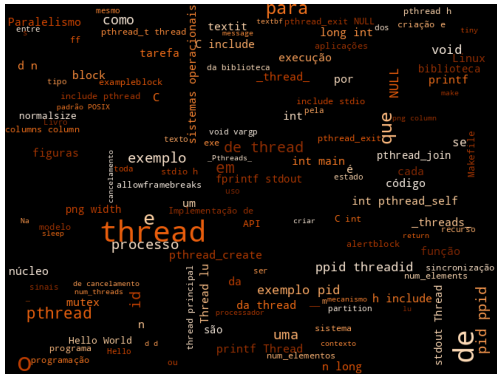
15 Referências
15.1 Referências
15.2 William
Threads, também conhecidas como processos leves, são fluxos de execução independentes dentro de um mesmo processo, compartilhando recursos como memória, arquivos abertos e espaço de endereçamento, mas mantendo estruturas próprias como pilha, registradores e contador de programa. Diferentemente dos processos tradicionais, que são criados com um conjunto completo de recursos pelo sistema operacional, as threads são mais leves e eficientes, permitindo maior paralelismo e desempenho.
Em sistemas com múltiplos núcleos de processamento, as threads podem ser executadas simultaneamente, aumentando a performance e a capacidade de resposta de aplicações, especialmente aquelas interativas. Conceitos fundamentais em programação multithread incluem escalonamento, sincronização, granularidade, regiões críticas e mecanismos de controle como locks, semáforos, mutexes, além da atenção com problemas como condições de corrida (race conditions) e impasses (deadlocks).
Sistemas operacionais modernos oferecem diferentes formas de suporte a threads. O Solaris adota um modelo híbrido com lightweight processes (LWPs), que atuam como intermediários entre threads de usuário e o kernel. O Windows 2000 utiliza um modelo com mapeamento direto entre threads de usuário e do kernel. Já o Linux trata threads como tarefas (tasks), criando-as por meio da chamada de sistema clone, que permite diferentes níveis de compartilhamento entre threads.
A programação com múltiplas threads oferece benefícios como economia de recursos, melhor aproveitamento dos processadores disponíveis e maior interatividade nas aplicações, sendo uma abordagem essencial para o desenvolvimento de sistemas concorrentes e responsivos.
15.3 Padrão POSIX
As POSIX Threads, ou simplesmente Pthreads, referem-se a uma API padronizada pelo IEEE no padrão POSIX 1003.1c, estabelecido em 1995. Esse padrão surgiu como uma resposta à fragmentação das implementações de threads disponíveis na época, quando diferentes fornecedores de sistemas Unix adotavam soluções incompatíveis. Tal diversidade dificultava a portabilidade de aplicações multithread.
Com o objetivo de unificar essas abordagens, o padrão POSIX definiu uma interface uniforme e portável para a criação, gerenciamento e sincronização de threads. Essa padronização abrange não apenas a sintaxe das funções, mas também o comportamento esperado, assegurando compatibilidade entre sistemas que implementam a API. A denominação “Pthreads” é comumente usada para referir-se às bibliotecas que seguem essa especificação, presentes em sistemas como Linux, BSD e Solaris.
O modelo proposto promove a programação concorrente com threads leves que compartilham o mesmo espaço de endereço, proporcionando desempenho superior em diversas aplicações.
16 Implementação de Threads
16.1 Implementação de Threads em Linguagens de Programação
- Basicamente em todas as linguagens que suportam threads a implementação segue a ideia de se ter uma função que é o código a ser executado pela threads quando ela for criada.
- Na linguagem C, podemos utilizar a biblioteca Pthreads do GNU/Linux.
- Implementa a API padrão POSIX (IEEE 1003.1c) para criação e sincronismo de threads.
- A API especifica o comportamento da biblioteca de threads, a implementação fica para o desenvolvimento da biblioteca.
- A especificação
POSIXdetermina que os registradores do processador, a pilha e a máscara de sinal sejam mantidos individualmente para cada thread. - Detalhando como os sistemas operacionais devem emitir sinais a Pthreads, além de especificar diversos modos de cancelamento de thread.
- Básico de
Pthreads:
[exampleblock]{Criar uma nova thread}
int pthread_create(pthread_t * thread, const pthread_attr_t * attr,
void * (*start_routine)(void *), void *arg);[/exampleblock]
[exampleblock]{Aguardar pelo término de outra thread}
int pthread_join(pthread_t th, void **thread_return);[/exampleblock]
[block]{Terminar a thread}
void pthread_exit(void *retval);[/block]
[alertblock]{Cancelar a execução da thread}
int pthread_cancel(pthread_t thread);[/alertblock]
- Na linguagem
Ccom Pthreads:
[block]{Na linguagem C com Pthreads}
#include <pthread.h>
void *function( void *ptr ) {
char *message;
message = (char *) ptr;
printf("%s \n", message);
}
int main() {
/* Declara a thread */
pthread_t thread1;
char *message1 = "Ola eu sou a Thread 1";
int iret1;
/* Cria a thread para executar a funcao. */
iret1 = pthread_create( &thread1, NULL, function, (void*) message1);
/* Aguarda ate que todas as threads completem antes de continuar. */
pthread_join(thread1, NULL);
printf("Thread 1 retornou: %d\n", iret1);
exit(0);
}[/block]
- Em Java existem pelo menos duas formas de criarmos threads.
- Em Python também podemos criar threads:
[columns]
[column=0.5]
[column=0.5]
[/columns]
16.2 Implementação de Paralelismo com Cilk
- Paralelismo com a Extensão Cilk.
[columns]
[column=0.5]
#include <stdio.h>
#include <cilk/cilk.h>
static void hello(){
int i=0;
for(i=0;i<1000000;i++)
printf("");
printf("Hello ");
}
static void world(){
int i=0;
for(i=0;i<1000000;i++)
printf("");
printf("world! ");
}
int main(){
cilk_spawn hello();
cilk_spawn world();
cilk_sync;
printf("Done! ");
}[column=0.5]
#include <stdio.h>
#include <pthread.h>
int main(){
int sum = 0;
int i = 0;
pthread_mutex_t m;
pthread_mutex_init(&m, NULL);
cilk_for (i = 0; i <= 1000; i++){
// lock.
pthread_mutex_lock(&m);
sum += i;
// unlock.
pthread_mutex_unlock(&m);
}
printf("%d\n",sum);
} [/columns]
16.2.1 Primitivas principais da API Pthreads
16.2.1.1 1. Criação e finalização de threads
pthread_create: cria uma nova thread, especificando a função que será executada.pthread_exit: encerra a thread atual e libera seus recursos.pthread_join: faz com que uma thread espere pela finalização de outra, permitindo sincronização e coleta de status.
16.2.1.2 2. Exclusão mútua (Mutexes)
Mutexes são utilizados para proteger seções críticas do código, garantindo que apenas uma thread por vez possa acessar determinados recursos compartilhados.
Principais funções: - pthread_mutex_init: inicializa um mutex. - pthread_mutex_lock: bloqueia o mutex, aguardando se ele já estiver em uso. - pthread_mutex_unlock: libera o mutex para que outras threads possam utilizá-lo. - pthread_mutex_destroy: destrói o mutex, liberando os recursos associados.
16.2.1.3 3. Variáveis de condição
Variáveis de condição (pthread_cond_t) permitem que threads aguardem por eventos ou estados específicos, sendo amplamente utilizadas em padrões como produtor-consumidor.
Funções principais: - pthread_cond_init: inicializa a variável de condição. - pthread_cond_wait: faz a thread esperar por um sinal, liberando temporariamente o mutex. - pthread_cond_signal: acorda uma thread em espera. - pthread_cond_broadcast: acorda todas as threads que estiverem aguardando. - pthread_cond_destroy: destrói a variável de condição.
16.2.1.4 4. Gerenciamento de atributos de threads
A biblioteca permite configurar atributos como: - Tipo de thread (joinable ou detached), - Prioridade, - Políticas de escalonamento.
Para isso, utilizam-se funções como: - pthread_attr_init - pthread_attr_setdetachstate
16.2.1.5 5. Cancelamento e tratamento de sinais
O padrão POSIX também prevê mecanismos para: - Cancelar threads (pthread_cancel), - Tratar sinais do sistema, contribuindo para a criação de aplicações robustas e responsivas.
16.3 Suporte do Hardware e Sistema Operacional
A API POSIX Threads (Pthreads) é amplamente suportada por sistemas operacionais compatíveis com o padrão POSIX, especialmente aqueles baseados em Unix, como Linux, macOS e BSD. Esses sistemas fornecem implementações robustas e eficientes da API, sendo frequentemente utilizadas em aplicações que demandam concorrência de alto desempenho.
Embora existam implementações de Pthreads para sistemas Windows, como a biblioteca Pthreads-w32, seu uso nesse ambiente é limitado. Isso se deve ao fato de que o Windows adota seu próprio modelo nativo de threads por meio da API Win32, o que torna o uso de Pthreads nesse contexto menos comum e, em alguns casos, redundante.
No nível de hardware, a utilização de threads POSIX é beneficiada por arquiteturas modernas de processadores que oferecem múltiplos núcleos e tecnologias como Hyper-Threading. Esse suporte permite que múltiplas threads sejam executadas em paralelo, seja em núcleos físicos distintos ou em unidades lógicas de execução.
No entanto, a responsabilidade pelo agendamento e pela distribuição das threads entre os núcleos disponíveis recai sobre o sistema operacional. Cabe a ele definir quando e onde cada thread será executada, considerando aspectos como prioridade, política de escalonamento e disponibilidade de recursos.
É importante destacar que as threads criadas por meio de Pthreads compartilham o mesmo espaço de memória do processo pai. Essa característica reduz a sobrecarga de criação e comunicação, quando comparada a processos independentes, mas impõe desafios adicionais em relação à sincronização. O acesso simultâneo a recursos compartilhados pode levar a condições de corrida e outros problemas de concorrência, exigindo o uso criterioso de mecanismos como mutexes e variáveis de condição.
16.4 Bibliotecas e Implementações
16.5 Exemplos Práticos com Pthreads
Nesta seção, apresentamos exemplos simples e didáticos para ilustrar o uso da biblioteca Pthreads em C.
16.5.1 Exemplo 1 – Hello World com threads
#include <pthread.h>
#include <stdlib.h>
#include <stdio.h>
void *thread(void *vargp);
int main()
{
pthread_t tid;
printf("Thread[%lu]: Hello World da thread principal!\n", (long int) pthread_self());
pthread_create(&tid, NULL, thread, NULL);
pthread_join(tid, NULL);
pthread_exit(NULL);
}
void *thread(void *vargp)
{
printf("Thread[%lu]: Hello World da thread criada pela thread principal!\n", (long int) pthread_self());
pthread_exit(NULL);
}Preparamos um Makefile para facilitar a compilação dos exemplos.
all: compile
compile: hello-world.c
gcc -lpthread hello-world.c -o hello-world.exe
clean:
rm *.exeO exemplo pode ser compilado utilizando o Makefile disponibilizado:
$ make
gcc hello-world.c -o hello-world.exe
$ ./hello-world.exe
Thread[139899883358016]: Hello World da thread principal!
Thread[139899883353792]: Hello World da thread criada pela thread principal!
$16.5.2 Exemplo 2 – Passagem de parâmetros
#include <pthread.h>
#include <stdlib.h>
#include <stdio.h>
typedef struct {
int i;
int j;
} thread_arg;
void *thread(void *vargp);
int main()
{
pthread_t tid;
thread_arg a = {1, 2};
pthread_create(&tid, NULL, thread, (void *)&a);
pthread_join(tid, NULL);
pthread_exit(NULL);
}
void *thread(void *vargp)
{
thread_arg *a = (thread_arg *)vargp;
printf("Parâmetros recebidos: %d %d\n", a->i, a->j);
pthread_exit(NULL);
}16.5.3 Exemplo 3 – Execução paralela de múltiplas threads
#include <pthread.h>
#include <stdlib.h>
#include <stdio.h>
typedef struct {
int id;
} thread_arg;
void *thread(void *vargp);
int main()
{
pthread_t tid[2];
thread_arg a[2];
for(int i = 0; i < 2; i++) {
a[i].id = i;
pthread_create(&tid[i], NULL, thread, &a[i]);
}
for(int i = 0; i < 2; i++) {
pthread_join(tid[i], NULL);
}
pthread_exit(NULL);
}
void *thread(void *vargp)
{
thread_arg *a = (thread_arg *)vargp;
printf("Começou a thread %d\n", a->id);
for(volatile int i = 0; i < 1000000; i++);
printf("Terminou a thread %d\n", a->id);
pthread_exit(NULL);
}16.5.4 Exemplo 4 – Uso de mutex (trava)
#include <pthread.h>
#include <stdlib.h>
#include <stdio.h>
typedef struct {
int id;
} thread_arg;
pthread_mutex_t mutex;
int var = 0;
void *thread(void *vargp);
int main()
{
pthread_t tid[2];
thread_arg a[2];
pthread_mutex_init(&mutex, NULL);
for(int i = 0; i < 2; i++) {
a[i].id = i;
pthread_create(&tid[i], NULL, thread, &a[i]);
}
for(int i = 0; i < 2; i++) {
pthread_join(tid[i], NULL);
}
pthread_mutex_destroy(&mutex);
pthread_exit(NULL);
}
void *thread(void *vargp)
{
thread_arg *a = (thread_arg *)vargp;
pthread_mutex_lock(&mutex);
printf("Thread %d: var antes = %d\n", a->id+1, var);
var += a->id + 1;
printf("Thread %d: var depois = %d\n", a->id+1, var);
pthread_mutex_unlock(&mutex);
pthread_exit(NULL);
}16.5.5 Exemplo 5 – Variáveis condicionais
#include <pthread.h>
#include <stdlib.h>
#include <stdio.h>
#include <unistd.h>
typedef struct {
int id;
} thread_arg;
pthread_mutex_t mutex;
pthread_cond_t cond;
int ready = 0;
void *thread(void *vargp);
int main()
{
pthread_t tid[2];
thread_arg a[2];
pthread_mutex_init(&mutex, NULL);
pthread_cond_init(&cond, NULL);
for(int i = 0; i < 2; i++) {
a[i].id = i;
pthread_create(&tid[i], NULL, thread, &a[i]);
}
for(int i = 0; i < 2; i++) {
pthread_join(tid[i], NULL);
}
pthread_mutex_destroy(&mutex);
pthread_cond_destroy(&cond);
pthread_exit(NULL);
}
void *thread(void *vargp)
{
thread_arg *a = (thread_arg *)vargp;
if(a->id == 0) {
pthread_mutex_lock(&mutex);
while(!ready) {
printf("Thread %d: esperando sinal...\n", a->id);
pthread_cond_wait(&cond, &mutex);
}
printf("Thread %d: recebeu sinal\n", a->id);
pthread_mutex_unlock(&mutex);
} else {
sleep(1);
pthread_mutex_lock(&mutex);
ready = 1;
pthread_cond_signal(&cond);
printf("Thread %d: enviou sinal\n", a->id);
pthread_mutex_unlock(&mutex);
}
pthread_exit(NULL);
}16.6 Modelo de Programação e Execução
O modelo de programação com Pthreads é baseado na criação e controle explícito de threads a partir de um processo principal. Cada thread pode ser vista como uma função separada que será executada de forma concorrente com as demais. O ponto de entrada de uma thread é sempre uma função com a assinatura void* função(void* argumento), permitindo grande flexibilidade para passagem de parâmetros via ponteiros genéricos. Funções como pthread_create, pthread_join e pthread_exit formam a base para o controle de ciclo de vida de uma thread. Além disso, mecanismos de sincronização como pthread_mutex_lock e pthread_cond_wait permitem o controle de acesso a recursos compartilhados, prevenindo condições de corrida (race conditions).
A sincronização se dá principalmente por meio de mutexes (para exclusão mútua) e variáveis de condição (para coordenação de estados). Essas estruturas permitem a construção de zonas críticas protegidas e a implementação de padrões clássicos de concorrência, como produtores e consumidores. Por exemplo, com pthread_mutex_lock e pthread_mutex_unlock, você garante que apenas uma thread possa acessar determinada seção crítica por vez. Já com pthread_cond_wait e pthread_cond_signal, você pode fazer com que uma thread aguarde até que uma certa condição seja atendida. O uso dessas primitivas exige disciplina, pois erros como deadlocks e starvation podem ocorrer se não forem bem planejadas.
Na prática, a modelagem com Pthreads requer um planejamento cuidadoso: é preciso definir claramente as tarefas que podem ser executadas em paralelo, decidir como compartilhar dados entre threads, e garantir que essas interações sejam seguras. Uma vantagem do modelo Pthreads é sua leveza: as threads compartilham o mesmo espaço de memória, permitindo comunicação mais eficiente do que processos independentes. No entanto, isso também exige maior atenção na programação, pois erros em uma thread podem afetar todo o processo.
int main(){
}Nota
16.7 Considerações Finais
Atualmente, praticamente todo tipo de aplicação tende a ser paralelizada, já que o uso de processadores multicore está cada vez mais disseminado. Em pouco tempo, todos os processadores terão múltiplos núcleos. O padrão Pthreads é uma das opções que permite o uso maximizado desses processadores, não havendo um tipo específico de aplicação para Pthreads.
Embora seu uso seja mais óbvio em algumas aplicações, como servidores web que recebem múltiplas requisições simultâneas, quase toda aplicação pode ser paralelizada com o uso de Pthreads.
16.7.1 Prós e Contras
16.7.1.1 Vantagens de se programar utilizando threads:
- Utiliza melhor o potencial dos processadores multicore, que são cada vez mais comuns.
- O custo da troca de contexto entre threads é menor do que entre processos, devido à leveza das threads.
- Aplicações com paralelismo inerente, como grandes servidores web, se beneficiam do uso simples de threads para atender múltiplas requisições simultâneas.
16.7.1.2 Desvantagens de se programar utilizando threads:
- O modelo de programação com threads é mais complexo do que o modelo sequencial tradicional.
- Converter programas sequenciais em programas com threads não é trivial, muitas vezes exigindo reescrita significativa do código.
Bloco de Código padrão.
$ gcc -pthread programa.c -o programa
$ ./programaFilename
Conforme apresentado no Código 16.I, o programa é compilado utilizando a flag -pthread.
Terminal
$ gcc -pthread programa.c -o programa
$ ./programa
Saída do programa aqui...O Código 16.III apresenta um exemplo de código que utiliza pthreads.
Exemplo de Thread
exemplo-thread.c
/* Para compilar use:
* C compiler: gcc -lpthread exemplo-thread.c -o exemplo-thread
* C++ compiler: g++ -lpthread exemplo-thread.c -o exemplo-thread
*/
#include <stdio.h>
#include <stdlib.h>
#include <pthread.h>
void *print_message_function( void *ptr );
int main() {
/* Declara duas threads */
pthread_t thread1, thread2;
char *message1 = "Olá eu sou a Thread 1";
char *message2 = "Olá eu sou a Thread 2";
int iret1, iret2;
/* Cria duas threads independentes, cada uma irá executar a função */
iret1 = pthread_create( &thread1, NULL, print_message_function, (void*) message1);
iret2 = pthread_create( &thread2, NULL, print_message_function, (void*) message2);
/* Aguarda até que todas as threads completem antes de continuar. */
/* Pode acontecer de executar algo que termine o processo/thread principal antes das threads terminarem */
pthread_join(thread1, NULL);
pthread_join(thread2, NULL);
printf("Thread 1 retornou: %d\n", iret1);
printf("Thread 2 retornou: %d\n", iret2);
exit(0);
}
void *print_message_function(void *ptr) {
char *message;
message = (char *) ptr;
printf("%s \n", message);
}Bloco de Código com callout.
$ gcc -pthread programa.c -o programa
$ ./programa
Executando em paralelo...Conforme apresentado na Precaução 16.I, bla